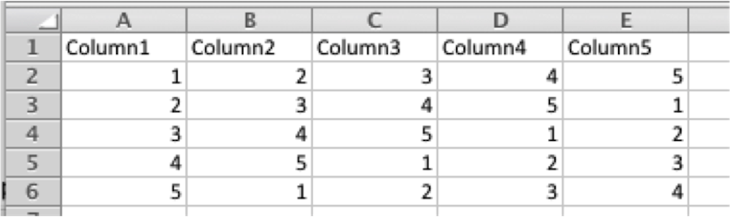
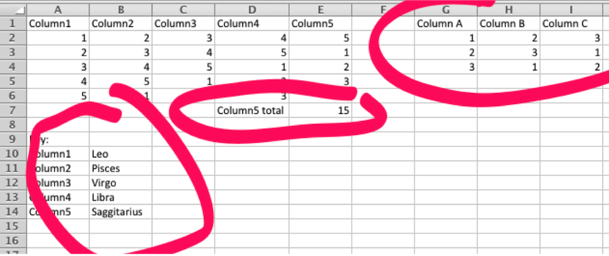
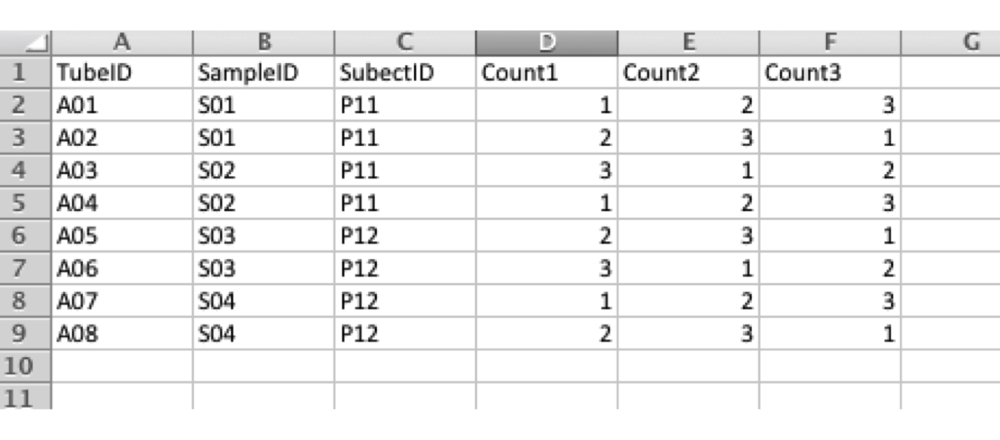
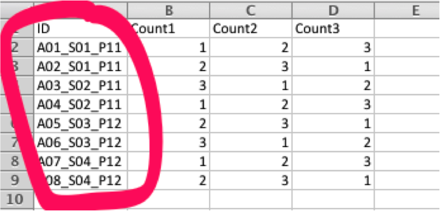
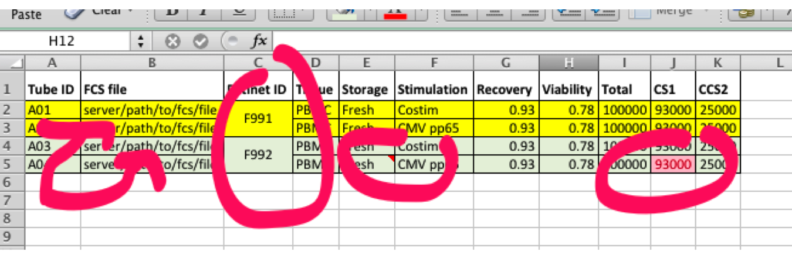
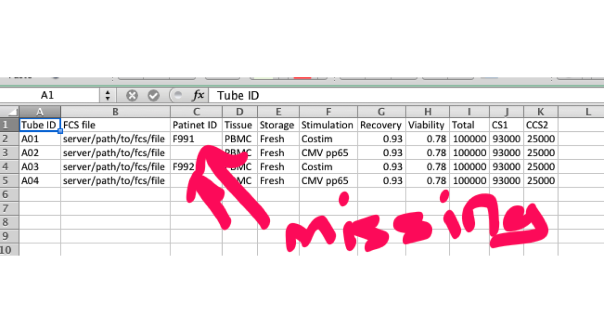

Preparing Data for Analysis
In biomedical contexts, data most often comes from external text files
such as spreadsheets. Here we will look at how to prepare such data for
importing into R as a data frame. In order to read spreadsheets
correctly, you need to be follow some simple rules when cosntrucitng the
table:
Do this
- A table has column headers and a number of rows and nothing else – it
is RECTANGULAR

Not this
- Do not put more than 1 table in a worksheet
- Do not use non-rectangular tables

Do this
- One cell = one value
- Easy to filter by tube, sample or subject
- Easy to write validation rules or lookup table

Not this
- ID column has 3 different values
- Need to do text parsing to recover information – very error prone

Round-trip from Excel to CSV and back to Excel
Before
- Inofmration in highlighting
- Information in comment notes
- Information in font color
- Merged cells

After
- Comments are lost
- Highlighting is lost
- Bad cell formatting is lost
- Merged cells become missing information

- When sorting, make sure you sort all the columns, even the ones that
are not on the screen
- Use a lookup table rather than typing if possible to avoid errors due
to typos
- Use a special marker to indicate misssing values - do not use 0 or
999 etc
- Do not keeep multiple copies of the same spredsheet
- If you must keep multiple copies, make sure you version them clearly
in the fileanme
- Excel is OK if you use almost NONE of its features!
{kind=link}
{kind=link}
{kind=link}
{kind=link}
{kind=link}
{kind=link}